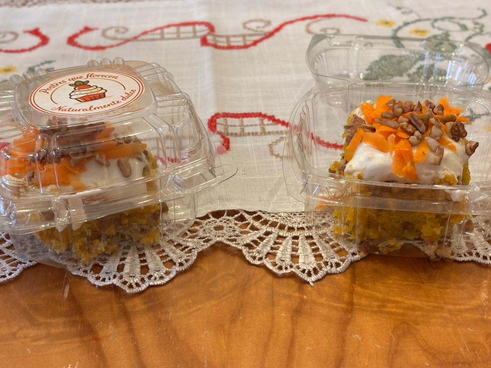
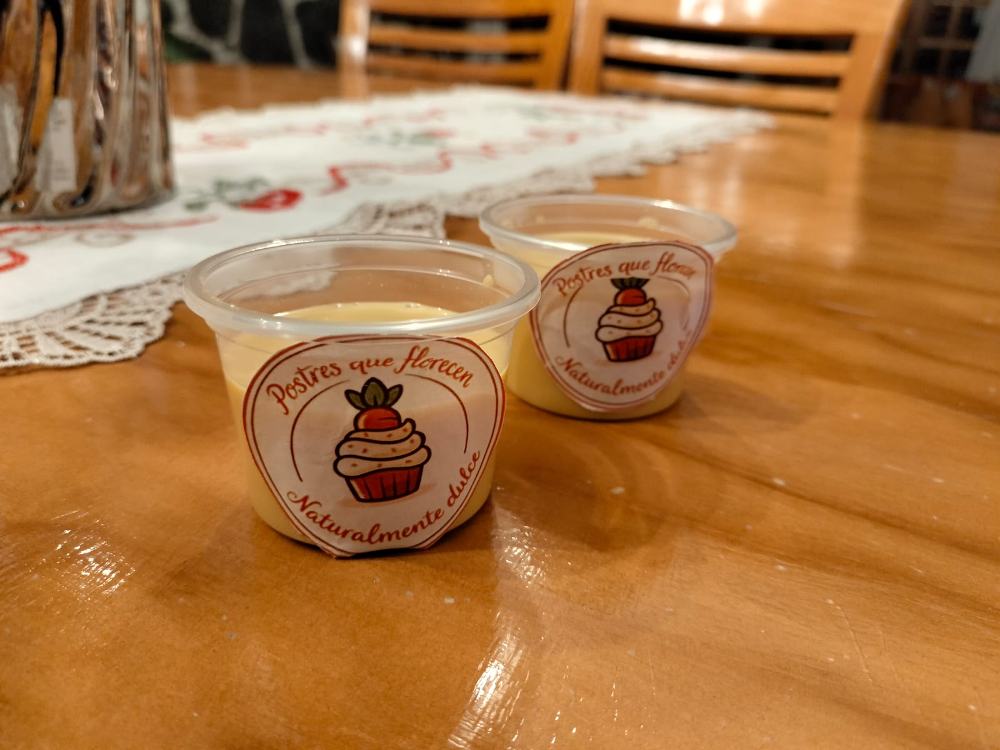
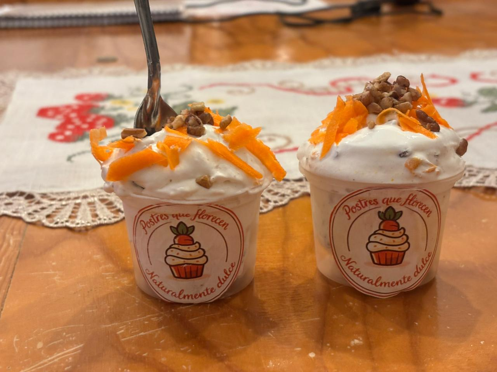

PRODUCTOS A DESARROLLAR
👨🍳👩🍳¡A cocinar!
Nosotros decidimos trabajar la zanahoria (nuestra materia prima) en postres porque es una excelente elección que aporta dulzura natural, lo que permite reducir la cantidad de azúcares añadidos y obtener preparaciones más sanas y nutritivas. Además, al ser un ingrediente accesible, fácil de cultivar y muy versátil, se adapta a recetas muy variadas, aportando también vitaminas, fibra y un sabor delicioso que sorprende gratamente a quienes los prueban.



🍰Pastel de zanahoria
El pastel de zanahoria es una opción viable para la comunidad porque aprovecha un cultivo que se puede sembrar fácilmente en espacios reducidos como huertos en cajas o macetas, lo que permite que cualquier persona o familia pueda obtener el ingrediente principal sin necesidad de grandes extensiones de terreno. Al producir la zanahoria de forma local y comunitaria, se reducen los costos de adquisición de los alimentos, se fomenta la colaboración entre vecinos y se convierte en una alternativa nutritiva y deliciosa que puede compartirse en reuniones, celebraciones o incluso comercializarse como producto elaborado, generando pequeños ingresos para las familias. En cuanto al impacto ambiental, sembrar nuestras propias zanahorias disminuye la necesidad de transportar estos alimentos desde zonas lejanas, lo que reduce la emisión de gases contaminantes derivados del traslado. Además, al realizar el cultivo con métodos naturales y abonos orgánicos, se evita el uso excesivo de químicos que dañan el suelo y las fuentes de agua, contribuyendo a mantener el equilibrio del ecosistema, proteger la biodiversidad y obtener alimentos más sanos y libres de residuos tóxicos.
🥛Atole de zanahoria
El atole de zanahoria es una preparación muy viable para la comunidad porque es una bebida tradicional, accesible y muy apreciada, que aprovecha las propiedades nutritivas de la zanahoria para ofrecer un alimento que aporta energía y vitaminas a bajo costo. Al sembrar la zanahoria de forma colectiva, se fomenta el trabajo en equipo, se comparten conocimientos sobre cultivo y cuidado de las plantas, y se garantiza el abastecimiento constante del ingrediente, lo que hace que esta bebida pueda estar al alcance de todos, independientemente de su condición económica. También puede ser una excelente alternativa para promover la alimentación saludable entre niños y adultos, incorporando vegetales de forma creativa y agradable. Respecto al impacto ambiental, cultivar nuestras propias zanahorias ayuda a reducir la huella de carbono asociada a la producción y distribución comercial de alimentos, ya que eliminamos procesos industriales que consumen gran cantidad de energía y recursos. Asimismo, al realizar el cultivo de manera responsable, se mejora la calidad del suelo al reponer sus nutrientes de forma natural, se evita la contaminación de ríos y suelos por el uso de fertilizantes y pesticidas sintéticos, y se promueve el uso racional del agua, fomentando prácticas de riego que cuidan este recurso tan valioso.
🍦Helado de zanahoria
El helado de zanahoria es una propuesta viable para la comunidad porque representa una forma innovadora y deliciosa de consumir este vegetal, logrando que incluso quienes no suelen comerlo lo disfruten como un postre fresco y nutritivo. Al sembrar la zanahoria de forma local, se asegura la disponibilidad constante del ingrediente principal, se reducen los gastos de producción y se convierte en una opción ideal para ofrecer en eventos, ferias locales o emprendimientos familiares, generando oportunidades de desarrollo económico y fortaleciendo la economía de la zona. Además, fomenta hábitos de alimentación saludable al combinar el placer de comer un postre con los beneficios nutricionales de la zanahoria. En lo que respecta al impacto ambiental, cultivar nuestras propias zanahorias contribuye a la conservación del medio ambiente al evitar el uso de envases y empaques plásticos que se utilizan en la comercialización de alimentos procesados. También ayuda a reducir la degradación de los suelos, ya que al emplear técnicas de cultivo orgánico se preserva su fertilidad a largo plazo, y se disminuye la presión sobre las zonas agrícolas extensivas que suelen provocar deforestación y pérdida de hábitats naturales. De esta manera, obtenemos alimentos sanos y al mismo tiempo cuidamos el entorno en el que vivimos.
| Componente | 🥕 Pastel de zanahoria | 🥛 Atole de zanahoria | 🍦 Helado de zanahoria |
|---|---|---|---|
| Energía | 373 kcal | 91 kcal | 96 kcal |
| Proteínas | 2.5 g | 1.6 g | 1.9 g |
| Carbohidratos | 51.7 g |
20 g | 23 g |
| Grasas | 17.5 g | 0.4 g | 3.6 g |
| Vitaminas | Vitamina A (100 µg), Vitamina E (2.5 mg), Ácido fólico (10 µg) |
Vitamina A (525 µg), Vitamina C (4 mg) |
Vitamina A (380 µg), Vitamina C (2.8 mg) |
| Minerales | Sodio (142 mg), Calcio (38 mg), Fósforo (72 mg) |
Calcio (47 mg), Potasio (120 mg), Sodio (39 mg) |
Calcio (70 mg), Fósforo (52 mg), Potasio (102 mg) |